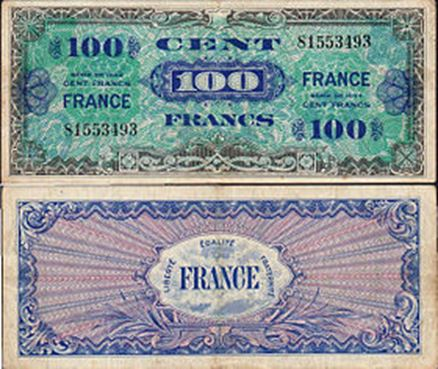

Les Anglo-Saxons ne nous ont jamais considérés comme des alliés.
De Gaulle refusait de célébrer le débarquement anglo-américain en Normandie. Ce fameux 6 juin (sixième jour du sixième mois du sixième an de la Guerre…) était considéré par lui comme une occupation à venir de l'Europe et une mise à l'écart de la France du fait de ses élites collaboratrices. La bourgeoisie française aux ordres de l'étranger, comme dit un jour Jean-Pierre Chevènement dans un discours inspiré, changerait simplement de patron. D'allemand, il devenait américain. Aujourd'hui il est les deux.
Parlons du débarquement. Le Général en parle très bien dans ses Mémoires (tome II). Il redoute beaucoup les intentions de Roosevelt. Et voici ce que De Gaulle déclare à Alain Peyrefitte en 1964:
« La France a été traitée comme un paillasson! Churchill m'a convoqué d'Alger à Londres, le 4 juin, il m'a fait venir dans un train où il avait établi son quartier général, comme un châtelain sonne son maître d'hôtel. Et il m'a annoncé le débarquement, sans qu'aucune unité française n'ait été prévue pour y participer. Nous nous sommes affrontés rudement. Je lui ai reproché de se mettre aux ordres de Roosevelt, au lieu de lui imposer une volonté européenne (il appuie). »
Churchill, de mère américaine, et qui fut l'homme des Etats-Unis avant d'être celui de l'Angleterre (balayé aux élections de 1945, il laissa son pays ruiné, soumis et sans ses Indes…) répond vertement au Général:
« Il m'a crié de toute la force de ses poumons: « De Gaulle, dites-vous bien que quand j'aurai à choisir entre vous et Roosevelt, je préférerai toujours Roosevelt! Quand nous aurons à choisir entre les Français et les Américains, nous préférerons toujours les Américains! Quand nous aurons à choisir entre le continent et le grand large, nous choisirons toujours le grand large! »
Et le Général de conclure de façon comminatoire :
« Et vous voudriez que j'aille commémorer leur débarquement, alors qu'il était le prélude à une seconde occupation du pays? Non, non, ne comptez pas sur moi! »
Ensuite il donne sa leçon d'histoire, et celle-ci est à considérer avec attention (j'ai déjà évoqué ce passage étonnant !): « Charles-de-Gaulle : « Le débarquement du 6 juin, ç'a été l'affaire des Anglo-Saxons, d'où la France a été exclue. Ils étaient bien décidés à s'installer en France comme en territoire ennemi! Comme ils venaient de le faire en Italie et comme ils s'apprêtaient à le faire en Allemagne ! Ils avaient préparé leur AMGOT qui devait gouverner souverainement la France à mesure de l'avance de leurs armées. Ils avaient imprimé leur fausse monnaie, qui aurait eu cours forcé. Ils se seraient conduits en pays conquis. »
En effet, les billets de l'AMGOT commencèrent à circuler à cette époque d'occupation militaire, qui annonçaient l'euro. Et, comme s'il avait prévu un jour la énième trahison des élites françaises, le Général explique à son ministre:
« Les Français sont déjà trop portés à croire qu'ils peuvent dormir tranquille, qu'ils n'ont qu'à s'en remettre à d'autres du soin de défendre leur indépendance! Il ne faut pas les encourager dans cette confiance naïve, qu'ils paient ensuite par des ruines et par des massacres! Il faut les encourager à compter sur eux-mêmes ! »
Aujourd'hui nous comptons inexplicablement en France sur l'OTAN. Mais de Gaulle explique que pour les Américains, toute concession doit mener à une capitulation. Et il dit même que Roosevelt voulait simplement « dominer l'univers ». Cette guerre à laquelle il poussa délibérément les Européens (dixit Chamberlain et l'ambassadeur Kennedy, père de JFK) l'y aura bien aidé! Et de conclure magnifiquement:
« Allons, allons, Peyrefitte ! Il faut avoir plus de mémoire que ça! Il faut commémorer la France, et non les Anglo-Saxons ! Dites-le à vos journalistes. »
En 1944, il rencontre à Washington « l'homme qui veut dominer l'univers », Roosevelt. Et cela donne dans ses mémoires ces lignes étonnantes sur le Nouvel Ordre Mondial américain avec ses bases et son parlement:
« Il est vrai que l'isolationnisme des États-Unis est, d'après le Président, une grande erreur révolue. Mais, passant d'un extrême à l'autre, c'est un système permanent d'intervention qu'il entend instituer de par la loi internationale. Dans sa pensée, un directoire à quatre : Amérique, Russie soviétique, Chine, Grande-Bretagne, réglera les problèmes de l'univers. Un parlement des Nations Unies donnera un aspect démocratique à ce pouvoir des « quatre grands ». Mais, à moins de livrer à la discrétion des trois autres la quasi-totalité de la terre, une telle organisation devra, suivant lui, impliquer l'installation de la force américaine sur des bases réparties dans toutes les régions du monde et dont certaines seront choisies en territoire français. »
Les bases US partout… Et le président visionnaire (un visionnaire à la Chaplin ou presque) d'ajouter :
«…le droit des peuples à disposer d'eux-mêmes, l'appui offert par Washington, l'existence des bases américaines, vont susciter, en Afrique, en Asie, en Australasie, des souverainetés nouvelles qui accroîtront le nombre des obligés des États-Unis. »
De Gaulle prend peur et explique (comme il a raison!) que l'on risque d'assister à la mort de l'Europe de l'Ouest, ce qu'il appelle lui l'Occident. Mais qui peut alors en « Occident » résister à Roosevelt ? L'Occident est la terre de la mort et du hors-caste, rappelle Guénon dans ses Symboles de la Science sacrée. Et de Gaulle sait que Roosevelt le considère comme un gêneur : « Bref, sous les manières courtoises du patricien, c'est sans bienveillance que Roosevelt considérait ma personne. » La « nouvelle vedette du monde », comme dit de Gaulle ailleurs, impose ses conceptions (qui ne sont hostiles alors ni à la Russie ni à la Chine). La guerre se termine, vite remplacée par notre Guerre Froide, formulée par Churchill dans son discours sur le rideau de fer. L'Empire et le Pentagone comprennent qu'il ne faut jamais être à court d'ennemi. On est à l'époque de 1984, lorsqu'Orwell explique que le pouvoir océanien (une subtile allusion à Cromwell en fait) a besoin de créer son Goldstein — et aussi ses conspirations et attentats —pour bien se maintenir en place! Goldstein annonce ainsi le russe, le chinois, le communiste, l'islamiste, ces nécessaires ennemis de toujours qui justifient 50 % des dépenses militaires de la planète et les centaines de bases US.
Cette lutte contre le mal suppose un chef autoritaire. Vingt ans plus tard, le Général de Gaulle tient encore ses propos qu'approuveraient Vladimir Poutine et les leaders des BRICS :
« Les Américains font croire que ne pas être d'accord avec eux, si vouloir rompre l'alliance atlantique et mettre en danger la liberté de l'Occident. Cuba leur est montée à la cervelle. En Amérique du Sud, en Europe, en Asie, tout le monde en colonne par deux derrière l'Oncle Sam, sinon gare à vous! (Rire.) Ce serait contraire à la solidarité et à la morale! Voyons, Peyrefitte, c'est de la rigolade! »
Et le Général de Gaulle de conclure avec une belle inspiration :
« Le grand problème, maintenant que l'affaire d'Algérie est réglée, c'est l'impérialisme américain. Le problème est en nous, parmi nos couches dirigeantes, parmi celles des pays voisins. Il est dans les têtes. »
Des mots prémonitoires? Ils permettent peut-être de mieux comprendre pourquoi mai 68 fut la première révolution orange…

Partager cette page